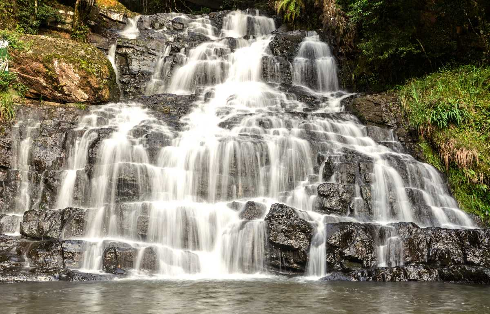
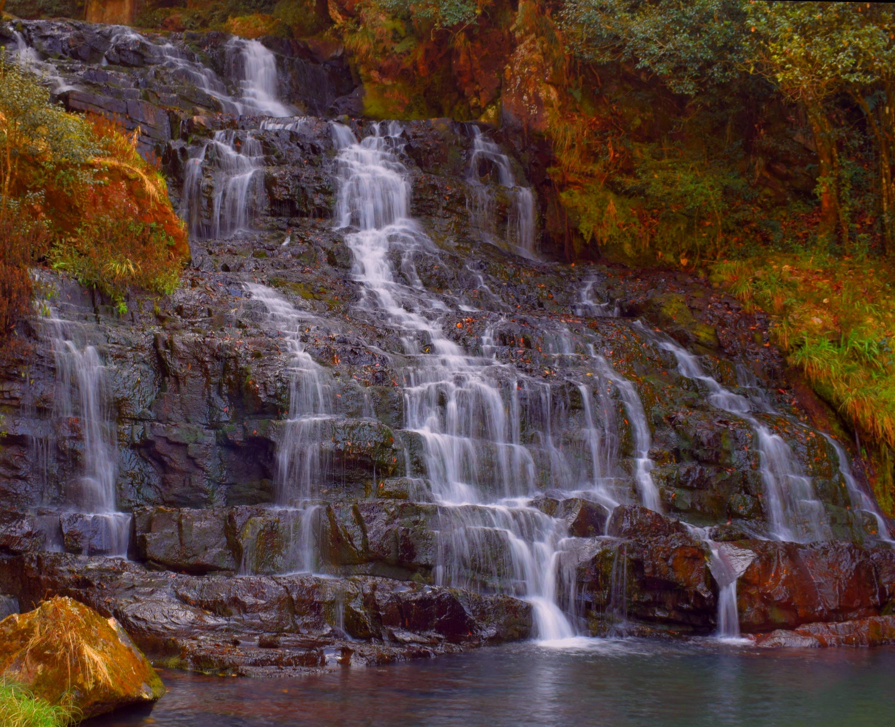
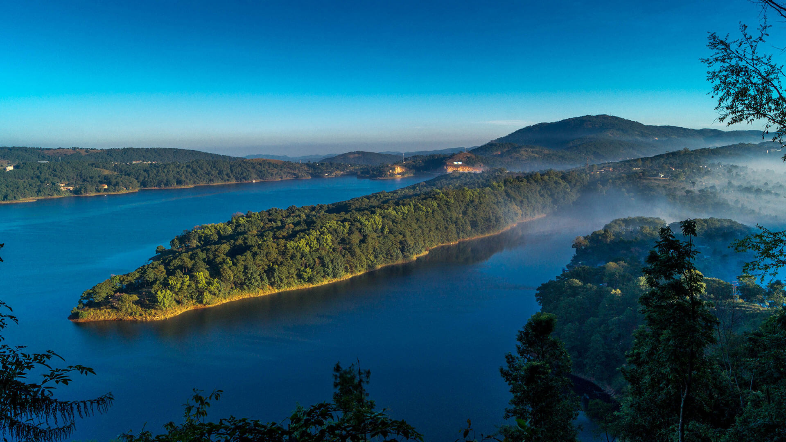
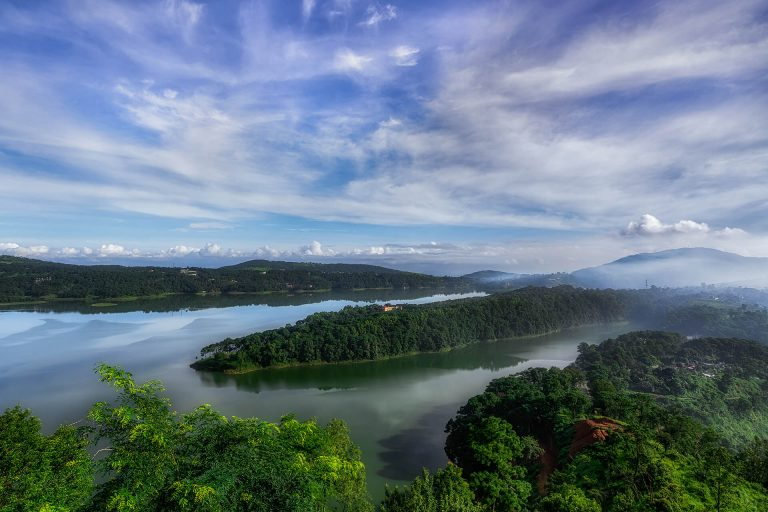
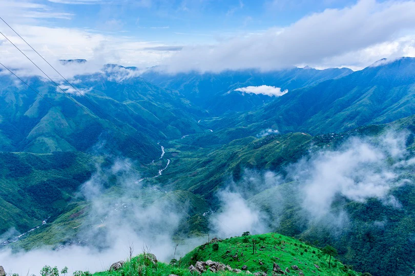
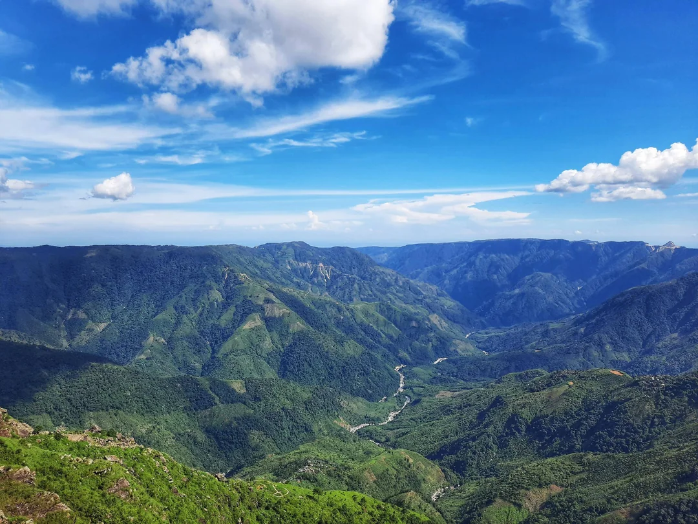

MEGHALAYA
ELEPHANT FALLS
Elephant Falls, nestled near Shillong, the capital city of Meghalaya, stands as a testament to the
natural beauty of the region. Its allure lies not only in the cascading waters but also in the
verdant surroundings that envelope visitors in a tranquil embrace. Located about 12 kilometers from
the heart of Shillong, the falls are easily accessible by road, drawing tourists seeking respite
from the urban bustle into the serene embrace of nature.
As visitors descend the steps leading from the parking area to the falls, they are greeted by a
symphony of sights and sounds. Dense foliage lines the pathway, offering glimpses of Meghalaya's
rich biodiversity. The journey to the viewing platforms is a journey of discovery, with each step
revealing a new facet of the region's natural splendor.
At the base of Elephant Falls, the three-tiered cascade mesmerizes onlookers with its sheer
magnificence. The water tumbles over rocky outcrops, creating a soothing melody that resonates
through the surrounding landscape. Though the falls were named "Elephant Falls" during the British
colonial era, in homage to a now-vanished elephant-shaped rock, their allure transcends mere
nomenclature.
Beyond its natural beauty, Elephant Falls holds cultural significance for the indigenous Khasi
people of Meghalaya. Known in the Khasi language as "Ka Kshaid Lai Pateng Khohsiew," meaning "Three
Steps Waterfalls," the falls are steeped in local legend and folklore. They serve as a reminder of
the deep connection between the people of Meghalaya and the land they inhabit.


While the monsoon season sees the falls at their most majestic, with torrents of water cascading
down the rocky slopes, Elephant Falls retains its allure throughout the year. Visitors flock to its
vantage points to capture its beauty through the lens of a camera and immerse themselves in its
serene ambiance.
Beyond Elephant Falls, the surrounding area offers further delights for travelers. From the
panoramic vistas of Shillong Peak to the ancient mystique of the Mawphlang Sacred Forest, there is
no shortage of wonders to explore in this corner of Meghalaya. Yet, it is the timeless allure of
Elephant Falls that continues to captivate the hearts and minds of all who venture into its embrace,
leaving an indelible imprint on their memories of Meghalaya's natural splendor.
UMIAM LAKE
Umiam Lake, also known as Barapani Lake, is a picturesque reservoir nestled in the outskirts of
Shillong, Meghalaya's capital. Its creation traces back to the 1960s when the Umiam River was dammed
as part of the Umiam-Umtru Hydro-Electric Power Project. This not only served the purpose of
generating hydroelectric power but also gave birth to the serene expanse of Umiam Lake, a gem in
Meghalaya's natural landscape.
Surrounded by rolling hills and verdant forests, Umiam Lake offers a breathtaking panorama that
captivates visitors year-round. The azure waters reflect the sky's hues, creating a tranquil
ambiance that beckons travelers seeking solace amidst nature's embrace. It's a haven for those
looking to escape the hustle and bustle of urban life and immerse themselves in the serenity of
Meghalaya's countryside.
Recreational activities abound at Umiam Lake, catering to a diverse range of interests. Boating
enthusiasts can take to the water in paddle boats, rowboats, or speedboats, while anglers can try
their luck at fishing in designated areas. Picnic spots dot the lake's shores, inviting families and
friends to relax, unwind, and enjoy a leisurely day amidst the scenic surroundings.


For the adventurous souls, Umiam Lake offers an array of water sports opportunities. Kayaking,
water skiing, and river rafting (during the monsoon season) provide thrills against the backdrop of
the lake's tranquil waters and lush greenery. As the sun begins its descent, visitors are treated to
mesmerizing sunset views over the lake, casting a golden glow that transforms the landscape into a
scene of ethereal beauty.
Umiam Lake is not just a destination; it's an experience—a symphony of nature's elements
orchestrated to perfection. Whether it's the serenity of a boat ride, the excitement of water
sports, or the simple pleasure of watching the sunset, Umiam Lake offers moments of bliss that
linger in the hearts and memories of all who visit its shores.
LAITLUM CANYON
Laitlum Canyon, situated near the village of Rasong in Meghalaya's East Khasi Hills district, is a
natural marvel that draws visitors with its stunning vistas and rugged charm. Located about 25
kilometers from Shillong, Meghalaya's capital, this canyon offers a breathtaking panorama of deep
gorges, rolling hills, and dense forests that stretch as far as the eye can see. The sheer magnitude
of the canyon and the raw beauty of its surroundings make it a captivating destination for nature
enthusiasts and photographers alike.
Trekking is a popular activity at Laitlum Canyon, with several trails leading down into the depths
of the gorge. While the trek can be challenging, it rewards adventurers with close encounters with
Meghalaya's diverse flora and fauna. As visitors descend into the canyon, they are enveloped by the
tranquility of the surroundings, with only the sounds of nature echoing through the air.
Beyond its natural allure, Laitlum Canyon holds cultural significance for the local Khasi
community. The name "Laitlum" translates to "end of hills" in the Khasi language, reflecting the
geographical features of the area. According to local beliefs, the canyon is also a sacred site with
myths and legends surrounding its formation and spiritual significance. Visitors can immerse
themselves in the rich cultural heritage of the region and gain insights into the traditions and
beliefs of the Khasi people.


One of the highlights of visiting Laitlum Canyon is witnessing the breathtaking sunset views from
its vantage points. As the sun descends below the horizon, painting the sky in hues of orange, pink,
and purple, the canyon is bathed in a warm glow that adds to its ethereal beauty. It's a magical
moment that leaves a lasting impression on all who have the privilege of experiencing it.
Laitlum Canyon is not just a tourist destination; it's a serene retreat that offers a respite from
the chaos of urban life. Visitors can connect with nature, explore the rugged terrain, and soak in
the tranquility of Meghalaya's pristine landscapes. Whether trekking through its trails, marveling
at its panoramic views, or immersing oneself in its cultural heritage, Laitlum Canyon promises an
unforgettable experience that captures the heart and soul of northeastern India.